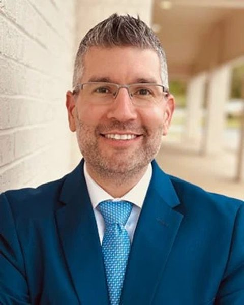
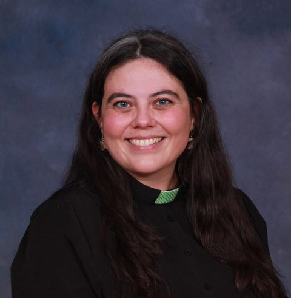
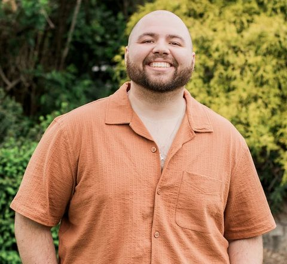
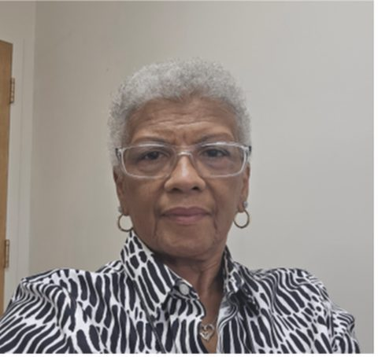

2026
Multiply Ohio
Thursday, October 29, 2026 · 10:00 AM – 3:00 PM
Welcome
"See, I am doing a new thing! Now it springs up; do you not perceive it?" Isaiah 43:19
Multiply Ohio is a gathering for a community of leaders committed to expanding the reach of the gospel through partnership, innovation, and multiplication. Together, we'll be challenged by fresh vision, inspired by stories of impact, and invited to consider how our churches can help create new pathways for people to encounter Jesus.
The future of multiplication in Ohio will be shaped not only by what we do, but by how we seek God together. This prayer reminds us that multiplication begins with God's abundance, grows through our shared commitment, and takes root in the daily lives of faithful disciples. As we join together across churches, communities, cultures, and generations, let us pray:
God of abundance,
Amen.
Getting there
Event Details
When
- Date
- Thursday, October 29, 2026
- Time
- 10:00 AM – 3:00 PM
Please arrive by 9:15 AM to allow time for parking and getting to the Recruit Room.
Dress comfortably and wear good walking shoes. The tour of the stadium will take place near the end of the day.
Where
- Location
- OSU — Career Center of Excellence
- Entrance
- Gate 30 at the Southeast Tower
Parking: Stadium surface lots are available at the hourly rate through the ParkMobile app. Spaces may be limited due to university staff and students on campus. You can also park in the nearby Tuttle Garage. Both shouldn't cost more than $20.
Lunch
Mediterranean Bowls Station — served with pita chips, hummus & whipped feta.
We've worked to accommodate a variety of dietary needs. If you prefer, you're welcome to bring your own lunch.
Agenda
Schedule
We're excited to gather for Multiply Ohio 2026! This day is designed to be informative, inspirational, and intentionally relational as we explore new possibilities for multiplication across Ohio.
Check-In
Coffee, networking, and registration.
Morning Gathering
- Centering & Worship
- Multiply Moments
- Intentional Connection
- Conversation with Bishop Jung
Lunch
Lunch and informal networking.
Afternoon Gathering
- Road to 100 update
- Multiply Moments
- Intentional Connection
- Keynote: Rodrigo Cruz
Tour of "The Shoe"
Explore the iconic venue and continue conversations with fellow participants.
Who's talking
Speakers
This year's lineup comes from a diverse set of cultures and backgrounds. Read more about our presenters and hear from them across keynote presentations, breakout sessions, and additional talks.
Keynote Speaker

Rodrigo was born and raised in Monterrey, Mexico, where he practiced criminal law for several years. He earned his M.Div. from Asbury Seminary and his D.Min. from Wesley Seminary. In 2016, he planted a multi-ethnic church — now a multi-site church with 5 campuses — called The Nett Church in Gwinnett County, Georgia.
In 2019, he was voted by the Chamber of Commerce as one of the 50 most influential Latinos in the State of Georgia. In 2022, The Nett was voted one of the 100 most reproducible churches in the country by Outreach Magazine. Rodrigo's most important ministry is his wife Kelly and their 5 children.

Reverend Lindsey Funtik is an ordained elder in the United Methodist Church, serving as associate pastor of Strongsville UMC in Strongsville, Ohio. She joyfully bears the title of shepherdess, but prides herself even more on being wife to John and mother to Arthur and Lucy.
Her greatest passions lie in helping all people seize their identity as the beloved of God and live into freedom and fullness without apology. In her spare time you'll find Lindsey nerding out over novels, writing prayerful poetry, and testing the limits of how much coffee and Diet Coke one human can consume.

Dustin Sable is the Director of Youth and Young Adults at Scioto Ridge United Methodist Church and the Associate College Pastor for Short North Church at OSU. As a former evangelical pastor, he's passionate about ministering to the spiritually hurt and hungry and empowering the church to better reach youth, young adults, and ex-vangelicals.
In collaboration with the Fresh Starts team, Dustin and Scioto Ridge are preparing to launch Refuge, a new worshiping community coming to northwest Hilliard and Dublin next fall.

Paula W. Stewart is an Elder in the West Ohio Conference of the United Methodist Church and has served in a clergy role since 2002. She began her ministry in Toledo before moving to Cincinnati in 2017, serving Clough UMC and then as lead pastor of Clough and Cherry Grove UMC in Anderson Township for eight years. She is presently appointed to Gaines UMC in the Madisonville neighborhood of Cincinnati.
She has served as Chairperson of the West Ohio Council on Finance and Administration and currently serves as Vice-chair of the Episcopacy Committee and a member of the West Ohio Conference Board of Ministry. Her passions are spiritual formation and transformation, and social justice issues addressing racism, homelessness, trauma-informed ministry, and eradicating the school-to-prison pipeline in communities of color.
Reverend Matthew Anderson is pastor of Bucyrus United Methodist Church. Matt is married to Pamela, and they have three sons — Justus, Silas, and Thaddaeus — and one daughter, Olyvia. He grew up in Huntsville, Alabama and Athens, Pennsylvania.
Matt earned a Bachelor's in History from Eastern University and his M.Div. from Asbury Theological Seminary. He's an avid sports fan and, having grown up in Alabama, a devoted Crimson Tide fan (Roll Tide!). He enjoys spending time with his family and playing pickleball.
Alongside us
Partners
Coming
Multiply Ohio partners and sponsors will be listed here.
A word of welcome
A Message from the Bishop
Greetings for the Large Church Leaders Gathering
Isaiah 43:18–19
Dear Colleagues in Christ,
It is a profound joy to gather with you — leaders of our large congregations and vital ethnic faith communities across Ohio. Each of you plays an indispensable role in the mission, vitality, and stewardship of our Annual Conference. I begin by expressing my deep gratitude for your faithful service, for the weight of responsibility you carry, and for the integrated and transformative ministries you sustain in Christ's name.
"See, I am doing a new thing! Now it springs up; do you not perceive it? I am making a way in the wilderness and streams in the wasteland."Isaiah 43:19
This gathering is a special invitation to join colleagues in this new thing that God is doing! This is our shared calling — to grow together into the fullness of Christ, each part contributing to the wholeness and vitality of the body.
We are not asking every church to plant a new congregation. We're inviting every church to become part of a multiplying movement by beginning to see Ohio's changing mission field in the foreground and the local church in the background.
I deeply believe that the shared commitment and imagination of our large church and ethnic congregation leaders will be the cornerstone of this new chapter.
We all recognize that in today's social and political context, the Church must be reborn. Learning from emerging generations, especially Gen Z, we are preparing new soil for ministry. Too often, our energy has been consumed by division and discontent. Now the Holy Spirit calls us again — to a Pentecostal vision of diversity, regeneration, and a renewed faith in God's kingdom.
THANK YOU for being part of this sacred conversation. May today's dialogue become a catalyst of strength and creative momentum for the Multiplying Mission before us. Together, let us multiply in ways that God desires for Ohio and for the world.
With gratitude and hope in Christ,
Hee-Soo Jung
Resident Bishop, Ohio Episcopal Area
The United Methodist Church
The journey toward 100 new faith communities across Ohio — launched and planned, by year and district. 31 and counting.
2025
West Ohio | Great Miami River District
- 1. Bethlehem Bhutanese UMC | Cincinnati
- 2. New Covenant UMC | Cincinnati
- 3. Resurrection Mason UMC | Cincinnati
West Ohio | Olentangy River District
- 4. Iglesia Hispana St Marks UMC | Columbus
- 5. Messy Church @ Beacon of Hope | Columbus
West Ohio | Maumee River District
- 6. Fresh Starts Breakfast Church @ Defiance St. Paul | Defiance
East Ohio | Northern Waters District
- 7. Ibada La Kiswahili | Akron
East Ohio | Central Valley District
- 8. Hanover House | Massillon First UMC
- 9. Amherst Meadows | Massillon First UMC
2026
East Ohio | Northern Waters District
- 10. Hope Community Church | Elyria
- 11. Sympatico | Strongsville UMC
- 12. Beyond the Building | Northampton UMC | Cuyahoga Falls
East Ohio | West Plains District
- 13. The Oasis Community | Bucyrus UMC
West Ohio | Olentangy River District
- 14. New International Service | Ebenezer UMC | Columbus
- 15. Korean Community UMC | Columbus
- 16. Sacred Tables & Wild Spaces @ Maple Grove UMC | Columbus
West Ohio | Western Lakes District
- 17. The Table | Urbana UMC
- 18. Hope Collective - Sidney Campus
West Ohio | Hocking River District
- 19. Abilities FX @ The Plains
West Ohio | Great Miami River District
- 20. Living Faith UMC | Cincinnati
2027 — Projected
East Ohio | South Forest District
- 21. South Zanesville / New Concord
East Ohio | West Plains District
- 22. Centerburg UMC
East Ohio | Northern Waters District
- 23. Messy Church @ Cory UMC
West Ohio | Olentangy River District
- 24. Refuge UMC | Scioto Ridge | Hilliard
- 25. Notas de Gracia | Grove City
- 26. Hombres Con Propósito | Grove City
- 27. Mesa de Vida | Grove City
- 28. Barn Church | Grove City
West Ohio | Hocking River District
- 29. Putnam Place | Zanesville
West Ohio | Maumee River District
- 30. Prayer Porch Expression | Edgerton UMC
- 31. Shifty Worship | Edgerton UMC
Find your district
DST Map
Coming
The district map will appear here.
Sparking innovation
Ignite Ohio Grants
Coming
Grant info and the application will appear here.
Leader development
Greenhouse Leader Development
Coming
Greenhouse / Semillero de Líderes details will appear here.